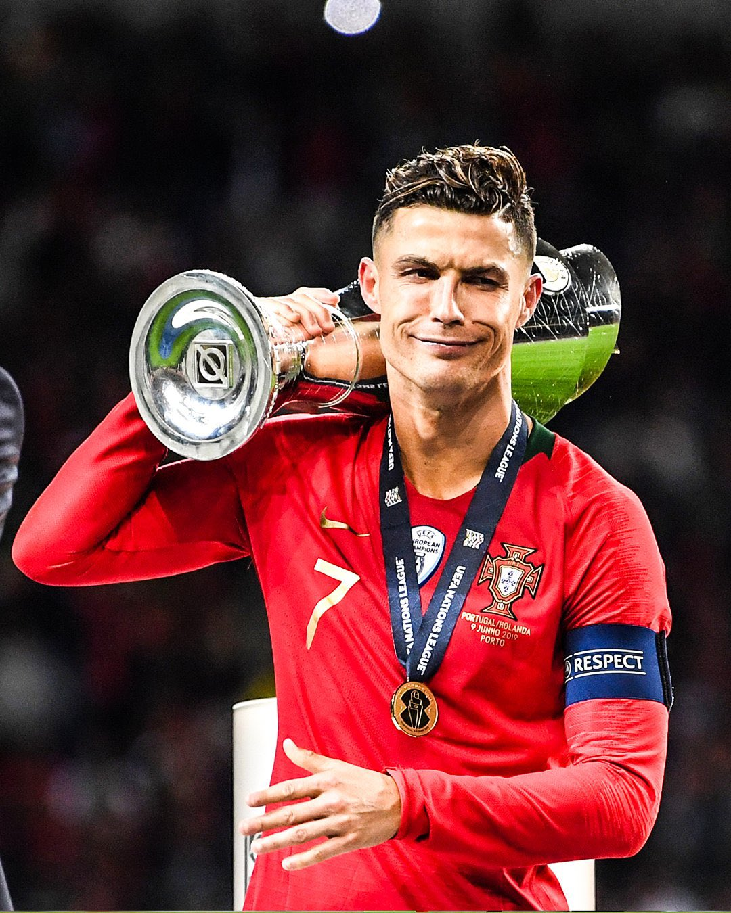

RONALDO WALKS AWAY: Cristiano Ronaldo quits Portugal after 22 years - Martinez left stunned as captain calls time on international career
Ronaldo ends record 222-cap career in shock announcement - Portugal's greatest ever says "my time with this shirt is done."

Portugal's 2-1 win over Ireland was overshadowed by Cristiano Ronaldo's bombshell announcement after the final whistle.
Portugal 2-1 Ireland - Full Detail + Ronaldo Farewell + Who Replaces Him
Roberto Martinez refused to be drawn on Cristiano Ronaldo's shock decision after Portugal sealed qualification with a 2-1 win in Lisbon.
Ronaldo started the game, scored the opener in the 31st minute - his 130th international goal - then was substituted in the 78th minute to a standing ovation. Few in the stadium knew what was coming next.
"I gave everything. Every drop. For 22 years I wore this shirt like it was my skin," said Ronaldo in a tearful post-match interview. "Today I say goodbye to the national team. Not because I cannot play anymore, but because it is time for the next generation to lead."
Matters escalated in the press conference. Asked if he had been pushed out, Ronaldo was blunt: "No one pushed me. This was my decision. I spoke to my family, I spoke to the coach. I leave with my head high."
After the announcement, there was a long embrace between Ronaldo and Martinez on the touchline. Asked if he tried to change his mind, Martinez said simply: "I asked him to stay until the World Cup. He said his story was complete."
It is the end of an era. Ronaldo debuted in 2003 against Kazakhstan at 18. He went on to play 222 games, score 130 goals, win Euro 2016 and the Nations League in 2019, and play at 5 World Cups - a record no man has matched.
What happens next for Portugal?
Martinez was told on Friday that Ronaldo would announce his decision after the Ireland game. The Federation wanted him to stay for one last World Cup, but Ronaldo refused a farewell tour. He insists he will not reverse the decision, even if Portugal reach the final.
"We have spoken for weeks. Cristiano is not just a player, he is Portugal," said Martinez, whose side move to top of their qualifying group. "Now we must build a new Portugal without him. That is my job."
Martinez hailed 25-year-old Goncalo Ramos after his winner against Ireland: "Ramos did really well. He is ready. He deserved this chance." Ramos is now expected to lead the line at the World Cup.
Portugal remain without Diogo Dalot and Ruben Neves for the next qualifier, both out with injury.
Who is the new captain? Bruno Fernandes is favourite to take the armband, with Bernardo Silva as vice-captain. Martinez will announce the new captain on Monday before the squad announcement.